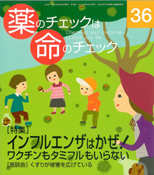

No.36 特集 インフルエンザは かぜ！ 2009年10月 発行
十数年前から「インフルエンザはかぜじゃない」というポスターを作って、国による大々的なキャンペーンが始まった。
やがて「インフルエンザに効く薬」が登場した。足並みを揃えるように、
専門家たちが「高病原性鳥インフルエンザのパンデミックが起きる」と言い出した。
マスメディアがこれに飛びつき、人々は十数年がかりですっかり洗脳されてしまった。
インフルエンザにかかると脳症になる。
インフルエンザにかかると重症になって死ぬ。
インフルエンザにかかると････怖い！
本当にそうでしょうか？
※今号の記事は、2008年11月23日、24日の２日間、大阪で開催した第６回医薬ビジランスセミナーの 「インフルエンザの予防・診断・治療を徹底検証」をもとに、今年の09Aインフルエンザ （いわゆる「新型インフルエンザ」）についての最新情報を徹底分析して再構成しました。
もくじ
特集 インフルエンザは かぜ！
■ 座談会：「新型」インフルエンザとタミフル
薬が被害を広げている ー20世紀の新薬アスピリン、21世紀の新薬タミフル
■ 脳症にならないための「薬の説明書」
アセトアミノフェン、イブプロフェン、抗ヒスタミン剤、テオフィリン
■ インフルエンザ（2009年型H1N1）とタミフル 浜 六郎
タミフル使いすぎー服用後の突然死
■ 第6回医薬ビジランスセミナーから
ワクチンの効果と害 山本英彦
迅速検査キットは役に立つか？ 林 敬次
参加者との質疑応答
■ インフルエンザ報道に冷静さと論理を 編集部
■ インフルエンザ・ワクチンにご用心 植松 稔
放射線専門医の立場から
連載
■ コトバのお勉強「後ろ向き」「前向き」ってなあに？ 編集部
■ 医師国家試験に挑戦しよう！ 木元康介
■ コーヒー無礼区 坂口啓子
■ リレーエッセー 茶畑のある風景 宇多滋樹
■ みんなのやさしい生命倫理（36） 生老病死（6） 谷田憲俊
その他
■ 質問箱（１）玄米菜食は胆石になりやすい？
（２）ピルで橋本病やパーキンソン病が起きるか？
■ 医師国家試験に挑戦しよう！ 解答と解説
■ 読者の声／次号予告
■ 書評とイベント案内
■ 用語の解説（記事に出てくる医学用語や統計学用語などを解説）
■ バックナンバー案内／常備店
■ 書籍申込用紙
■ 編集後記